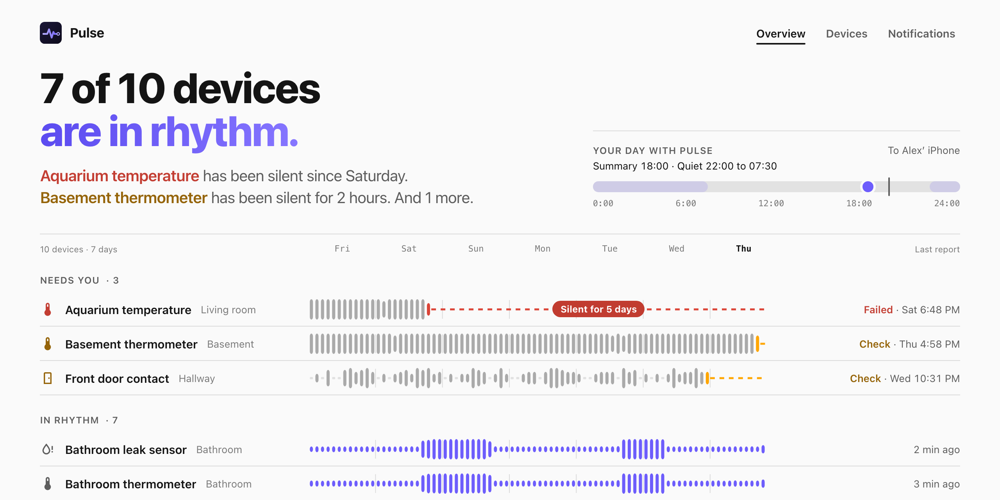
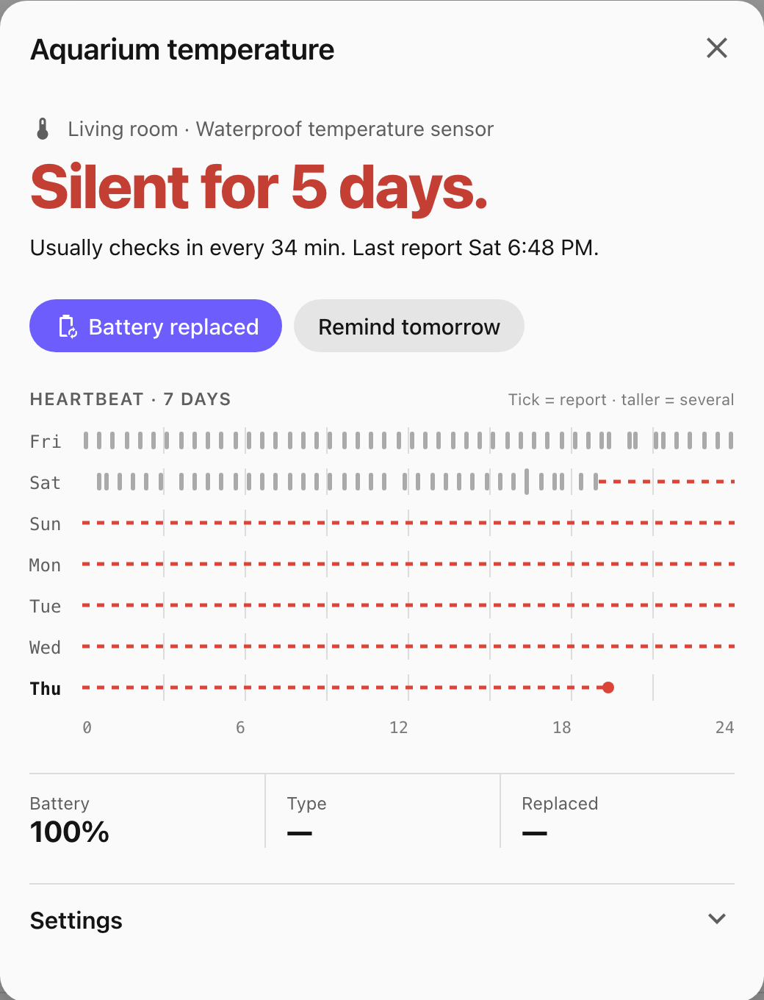
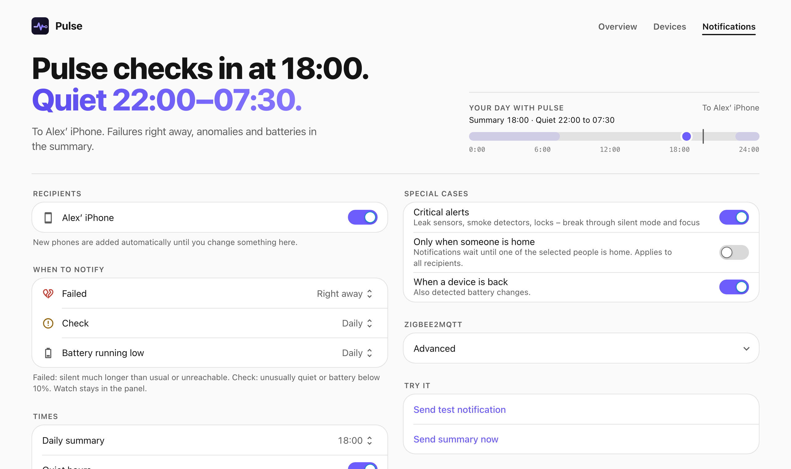
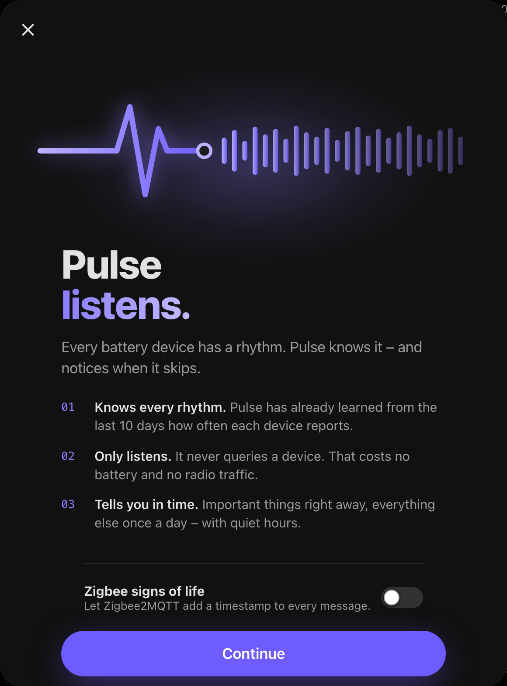
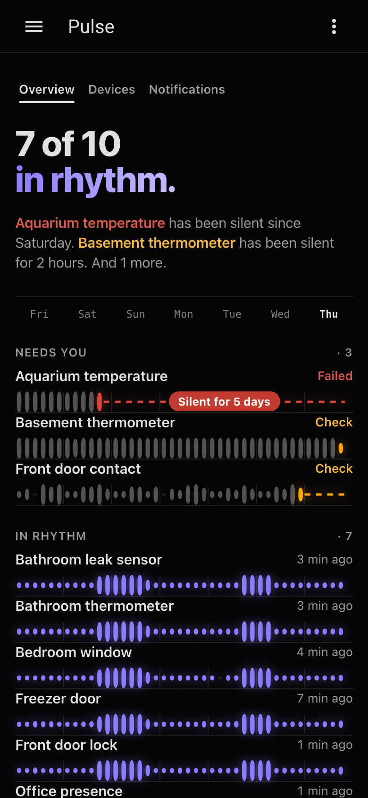

For Home AssistantFür Home Assistant
Every sensor
has a rhythm.Jeder Sensor
hat einen Takt.
Pulse learns how often each battery device reports and notices when one goes quiet. It only listens, never polls. No battery wasted, no automation left guessing.Pulse lernt, wie oft sich jedes Batteriegerät meldet, und merkt, wenn eines verstummt. Es hört nur zu und fragt nie ab. Keine Batterie verschwendet, keine Automation im Blindflug.

The problemDas Problem
The battery said 94 %.
The door said nothing.Die Batterie sagte 94 %.
Die Tür sagte nichts.
When a sensor dies, Home Assistant keeps showing the last state it heard. The door stays "closed", the leak sensor stays "dry", the battery stays at 94 %. Nobody notices until an automation misfires a week later.Stirbt ein Sensor, zeigt Home Assistant einfach weiter den letzten Zustand. Die Tür bleibt „geschlossen“, der Lecksensor „trocken“, die Batterie bei 94 %. Es fällt erst auf, wenn eine Woche später eine Automation danebengreift.
Pulse looks at the one thing that never lies: how often the device talks.Pulse schaut auf das Einzige, was nie lügt: wie oft das Gerät sich meldet.

How it decidesSo entscheidet es
Four words.
Always with a reason.Vier Worte.
Immer mit Begründung.
From the gaps between reports Pulse learns a typical gap and a longest normal gap for every device. The current silence is compared with both. Important devices such as locks, leak and smoke sensors get tighter limits.Aus den Abständen zwischen den Meldungen lernt Pulse je Gerät einen typischen und einen längsten normalen Abstand. Die aktuelle Stille wird mit beiden verglichen. Wichtige Geräte wie Schlösser, Leck- und Rauchmelder bekommen engere Grenzen.
- GoodGutReporting as usual, about every 30 minutes.Meldet sich wie gewohnt, etwa alle 30 Minuten.
- WatchBeobachtenA bit late. 2.5 × the typical gap, or the battery is at 20 %.Etwas spät. 2,5 × der typische Abstand, oder die Batterie ist bei 20 %.
- CheckPrüfenUnusually quiet. 4 × the typical gap, unreachable for 20 minutes, or the partner device keeps firing while this one stays silent.Ungewöhnlich still. 4 × der typische Abstand, 20 Minuten nicht erreichbar, oder das Partnergerät meldet sich weiter und dieses nicht.
- FailedAusgefallenSilent far too long. 8 × the typical gap or unreachable for 2 hours. Shows up under Repairs.Viel zu lange still. 8 × der typische Abstand oder 2 Stunden nicht erreichbar. Erscheint unter Reparaturen.
- Restart echoes don't count.Neustart-Echos zählen nicht. Values that Zigbee2MQTT or Home Assistant replay after a restart are never taken as a sign of life.Werte, die Zigbee2MQTT oder Home Assistant nach einem Neustart erneut schicken, gelten nie als Lebenszeichen.
- Cross-check.Gegenprobe. Pair a lock with its door contact. If the lock keeps reporting and the contact doesn't, Pulse notices early.Schloss und Türkontakt als Partner: meldet sich das Schloss weiter und der Kontakt nicht, merkt Pulse es früh.
- Battery changes.Batteriewechsel. Detected from a voltage or level jump or a Zigbee re-join, with a history per device. NiMH rechargeables are exempt from percentage rules because their percentage says nothing.Erkannt am Spannungs- oder Füllstandssprung oder einer Zigbee-Neuanmeldung, mit Historie je Gerät. NiMH-Akkus sind von Prozentregeln ausgenommen, ihr Prozentwert sagt nichts.
- Honest about gaps.Ehrlich bei Lücken. Times when Home Assistant wasn't running are hatched, not shown as silence.Zeiten, in denen Home Assistant nicht lief, werden schraffiert, nicht als Stille gezeigt.
NotificationsMitteilungen
Tells you once.
At a good time.Sagt es einmal.
Zur passenden Zeit.
Straight to the Companion app. Failures right away, the rest in one daily summary, with quiet hours and "only when someone is home". Never the same message twice.Direkt in die Companion-App. Ausfälle sofort, der Rest in einer täglichen Zusammenfassung, mit Ruhezeit und „erst beim Heimkommen“. Nie dieselbe Mitteilung zweimal.
- Critical alertsKritische Mitteilungen break through Do Not Disturb when an important device fails.durchbrechen „Nicht stören“, wenn ein wichtiges Gerät ausfällt.
- ButtonsKnöpfe in the notification: Battery replaced, Remind tomorrow.in der Mitteilung: Batterie gewechselt, Morgen erinnern.
- One message for an outage.Eine Mitteilung bei Ausfall. If a hub or bridge takes many devices down at once, you get one message naming them, not forty.Reißt eine Bridge viele Geräte auf einmal mit, kommt eine Mitteilung mit den Namen, nicht vierzig.

Zigbee2MQTT
One switch.
Every heartbeat.Ein Schalter.
Jeder Herzschlag.
Many sensors only send when a value changes. With one switch Pulse turns on last_seen and availability in Zigbee2MQTT, so it also sees the reports that changed nothing. Battery devices send nothing extra.Viele Sensoren senden nur, wenn sich ein Wert ändert. Mit einem Schalter aktiviert Pulse last_seen und Verfügbarkeit in Zigbee2MQTT und sieht so auch die Meldungen, die nichts geändert haben. Batteriegeräte senden nichts zusätzlich.


InstallationInstallation
Three minutes.
Then it just listens.Drei Minuten.
Dann hört es einfach zu.
https://github.com/SH1FT-W/pulse
- Add the repository to HACSRepository in HACS eintragenHACS → Integrations → ⋮ → Custom repositories. Paste the address above, type Integration.HACS → Integrationen → ⋮ → Benutzerdefinierte Repositories. Adresse oben einfügen, Typ Integration.
- Install Pulse and restartPulse installieren und neu startenHome Assistant 2026.9 or newer.Home Assistant 2026.9 oder neuer.
- Add the integrationIntegration hinzufügenSettings → Devices & services → Add integration → Pulse. One click, Pulse finds your battery devices itself.Einstellungen → Geräte & Dienste → Integration hinzufügen → Pulse. Ein Klick, Pulse findet deine Batteriegeräte selbst.
- Open Pulse in the sidebarPulse in der Seitenleiste öffnenAdmins can change everything, other users see the panel read only. Flip the Zigbee switch if you use Zigbee2MQTT.Admins können alles ändern, andere Nutzer sehen das Panel nur lesend. Mit Zigbee2MQTT den Zigbee-Schalter umlegen.